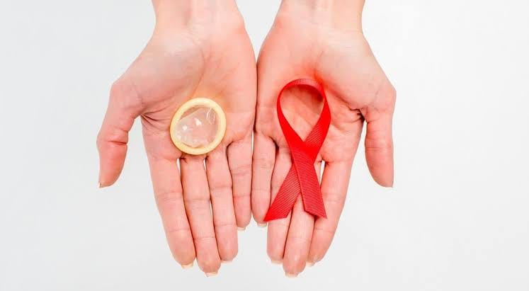
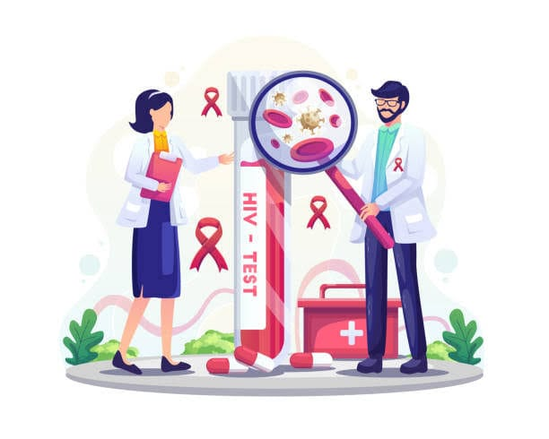

Estrategias de Prevención
Conoce las medidas eficaces para cuidar tu salud sexual y la de tu entorno.
La Estrategia de Prevención Combinada
No existe una única medida para todas las personas: la prevención combinada reúne barreras físicas (el condón), educación, pruebas periódicas y medicamentos preventivos, según tu situación y tu estilo de vida.
Educación integral: conversar de forma abierta, informada y sin prejuicios sobre sexualidad reduce las transmisiones por desconocimiento.

Postergar el inicio de las relaciones sexuales o decidir no tenerlas por un tiempo es una opción personal válida y efectiva.
Una pareja estable, con fidelidad mutua y ambos con resultado negativo en la prueba, reduce el riesgo de transmisión.
Usar el preservativo correctamente en cada relación sexual es el método más accesible y también protege de otras infecciones de transmisión sexual (ITS).
No compartir agujas ni jeringas y usar siempre material estéril en cualquier procedimiento (tatuajes, piercings, atención médica).
Prevención en el embarazo
Toda gestante debe hacerse la prueba de VIH en su control prenatal. Si resulta positiva, el tratamiento supervisado reduce de forma muy importante el riesgo de transmisión al bebé.
PrEP y PEP: medicamentos para prevenir
Complementan al condón; no lo reemplazan frente a otras ITS.
PEP (profilaxis post-exposición)
Es un tratamiento de emergencia que se toma después de una posible exposición (relación sin protección, violencia sexual, accidente con punzocortantes). Debe iniciarse lo antes posible y dentro de las primeras 72 horas, bajo indicación médica. Acude de inmediato a un servicio de emergencia o a tu establecimiento de salud.
PrEP (profilaxis pre-exposición)
Es una pastilla que toman, antes de exponerse, personas con mayor probabilidad de contacto con el VIH. Se usa con control médico y pruebas periódicas. Su disponibilidad en el Perú depende de los establecimientos y de la población priorizada: consulta en tu servicio de ITS/VIH o llama al 113.
Información sobre las Pruebas de Descarte
Saber tu estado de salud te da el control. Hacerse la prueba es un acto de cuidado y responsabilidad.

La prueba rápida
Detecta señales de la infección en una muestra de sangre y da resultado en unos 20 minutos. Es confidencial y se ofrece gratuitamente en los establecimientos del MINSA. Un resultado reactivo se confirma con una prueba adicional.
El periodo de ventana
Es el tiempo que el cuerpo tarda en producir marcadores detectables. Si tuviste una situación de riesgo y el resultado es negativo, puede ser necesario repetir la prueba. El personal de salud te indicará cuándo, según la prueba utilizada y tu caso.
⚠️ ¿Cuándo se considera una situación de riesgo?
Haber tenido relaciones sexuales (vaginales, anales u orales) sin preservativo con una pareja cuyo estado de salud desconoces, compartir agujas o haber tenido un accidente con instrumental punzocortante contaminado. En estos casos, acude cuanto antes: la PEP funciona solo si se inicia a tiempo.
¿Dónde pedir ayuda o hacerte la prueba?
- Infosalud (MINSA): llama al 113, gratuito, para orientación y ubicar tu establecimiento de salud más cercano.
- En Cusco: acude a tu centro de salud o a hospitales como el Hospital Regional del Cusco o el Hospital Antonio Lorena, y pregunta por el servicio de ITS/VIH (consejería y prueba).
- DIRESA Cusco: puede indicarte el establecimiento con atención de VIH más cercano a tu distrito.
Confirma horarios y servicios disponibles antes de ir.